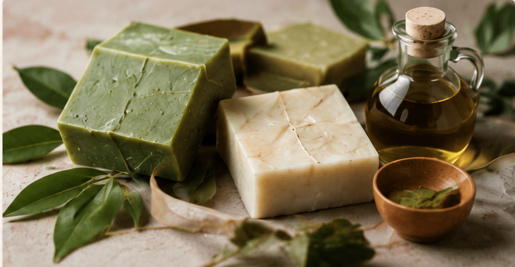

Misión
Transformar residuos en valor
Producimos jabón ecológico en barra a partir de aceite de cocina usado, aplicando procesos responsables y certificados de neutralización y saponificación controlada, para ofrecer productos seguros, biodegradables y útiles para hogares y negocios.